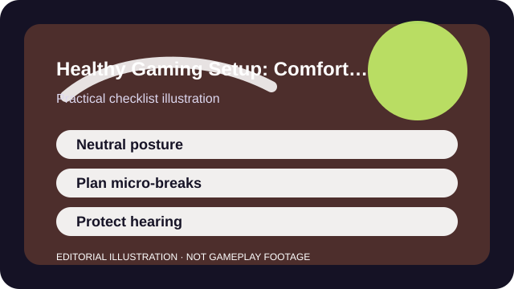

QUICK ANSWER
The short version
Set up for neutral posture, build in short movement and volume habits, and treat discomfort as useful feedback instead of something to outplay.
Performance advice that hurts your body is bad advice. A perfect sensitivity or frame rate is not actually successful if the setup leaves you tense, numb, or exhausted enough that the hobby becomes harder to enjoy.
The goal is not a showroom desk. It is a boringly sustainable position, a reasonable audio level, and a few habits that still work on an ordinary weeknight when you are tired and tempted to skip the basics.

CHECKLIST
What to confirm before you change anything
- Place the screen and chair so your neck can stay neutral instead of craning forward.
- Keep wrists and shoulders in a position that does not force constant tension.
- Check headphone or speaker volume before the session gets loud enough to normalize excess.
- Plan short movement breaks instead of waiting until pain forces a long stop.
- Know which accessibility or remapping options reduce strain in the games you play most.
You do not need a perfect ergonomic lab. You need enough setup clarity that discomfort stops being invisible until it becomes a bigger problem.
SCENARIO
When long sessions feel fine until the soreness shows up later
A lot of strain builds quietly. The first hour feels normal, the second feels competitive, and only afterward do the wrist, neck, or ears tell you the setup was costing more than you noticed in the moment.
That delayed feedback is why structure matters. A planned volume check or movement break protects you better than relying on whether the current game is exciting enough to hide the warning signs.
PROCESS
A repeatable way to work through it
Remove the obvious strain points
Fix seat height, screen angle, wrist compression, and any audio default that is louder than it needs to be.
Plan the smallest possible break habit
A one-minute stretch or stand-up interval is easier to keep than a heroic reset you never actually take.
Use easier inputs where possible
Remaps, toggles, subtitles, or simplified interaction options can reduce strain without harming the experience.
Treat symptoms as information
Pain, numbness, headaches, or hearing fatigue are data saying the setup needs help, not proof you should tough it out.
A healthy setup pays off because it is repeatable. If the solution only works when you remember an elaborate ritual, it probably needs to be simplified again.
COMMON MISTAKES
What usually makes the problem worse
Locking into one posture for too long
Even a decent posture becomes a problem if you freeze there for hours without movement.
Using volume to overpower a bad mix
Louder is not the same as clearer, and ears do not warn you as loudly as sore muscles do.
Ignoring recurring symptoms because performance seems good
Short-term results can hide long-term strain surprisingly well.
SUCCESS CRITERIA
How to know the change actually worked
- You finish sessions with less wrist, shoulder, neck, or ear fatigue.
- Breaks happen automatically enough that they do not require heroic self-control.
- Accessibility or remap choices feel like smart defaults, not admissions of failure.
- The setup is simple enough to maintain on an ordinary busy day.
The best healthy setup disappears into the background. You notice it mostly because the old aches or habits show up less often.
SOURCES AND LIMITS
Where to verify live details
- This guide is not medical advice, and chronic symptoms deserve qualified professional help.
- Furniture, body size, disability, and room constraints change what a good setup looks like.
- Hearing, vision, or pain symptoms can have causes beyond the immediate gaming setup.
Menu names, defaults, and device behavior can change after updates. Use the linked official support surfaces for the current live details and keep this guide for the process around them.